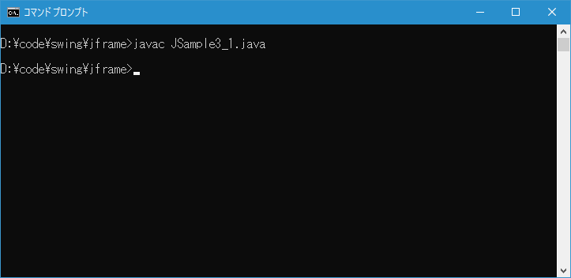
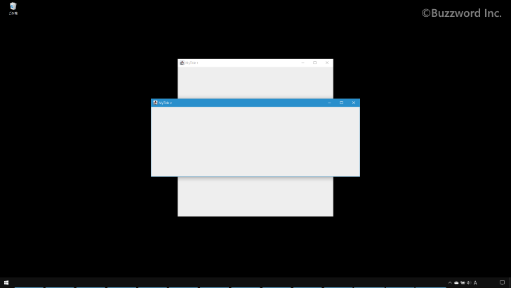

フレームをWindowsの中央の位置に表示する
フレームを作成し表示する時に座標尾を指定してフレームの位置を指定する代わりに、 Windows の画面の中央にフレームが表示されるように設定する方法について解説します。
フレームをWindowsの中央に移動する
フレームを Windows の中央に表示するには JFrame クラスの親クラスである Window クラスで定義されている setLocationRelativeTo メソッドを使います。
public void setLocationRelativeTo(Component c)
次のシナリオに応じて、指定されたコンポーネントを基準にしたウィンドウの位置を設定します。
後述のターゲット・スクリーンとは、setLocationRelativeToメソッドの呼出しのあとにウィンドウが配置される画面のことです。
コンポーネントがnullの場合、またはこのコンポーネントに関連付けられた GraphicsConfigurationがnullの場合、ウィンドウは画面の中央に配置されます。 中心点はGraphicsEnvironment.getCenterPointメソッドで取得できます。
コンポーネントがnullではないが現在表示されていない場合、このコンポーネントに関連付けられた GraphicsConfigurationで定義されているターゲット・スクリーンの中央にウィンドウが配置されます。
コンポーネントがnullではなく、画面に表示されている場合、ウィンドウの中心がコンポーネントの中心と一致するようにウィンドウが配置されます。
ウィンドウを画面間で移動することが画面の構成で許可されていない場合、ウィンドウは単に上記の条件に従って配置され、そのGraphicsConfigurationは変更されません。
注: ウィンドウの下辺が画面の外にある場合、ウィンドウはComponentの画面の中央に近い方の側に配置されます。 つまり、コンポーネントが画面の右側にある場合、ウィンドウはその左側に配置され、コンポーネントが左側にある場合、ウィンドウはその右側に配置されます。
ウィンドウの位置が計算されたあとでウィンドウの上辺、左辺、または右辺が画面の外にある場合、ウィンドウの上辺、左辺、または右辺が画面の対応する辺と一致するようにウィンドウが配置されます。 ウィンドウの左辺と右辺の両方が画面の外にある場合、ウィンドウは画面の左側に配置されます。 上辺と下辺の両方が画面の外にある場合も、同様の配置が行われます。 その場合、ウィンドウは画面の上側に配置されます。
このメソッドは、幾何学的図形に関連するデータを変更します。 そのため、Windowオブジェクトがデスクトップ設定に厳密に対応する方法で配置およびサイズ設定されるように、ネイティブ・ウィンドウ管理システムはこのような要求を無視するか、または要求されたデータを変更する可能性があります。
パラメータ:
c - ウィンドウの位置の基準となるコンポーネント
引数にコンポーネットを指定した場合、そのコンポーネントの中心の位置にフレームが表示されるように移動しますが、引数に null を指定するとフレームは Windows画面の中央に表示します。
フレームの左上隅の座標が記述になるのではなくフレームの中央が Windows の中央になるように移動します。その為フレームのサイズが事前に設定されている必要があります。フレームのサイズを設定する方法については「フレームのサイズと表示位置を設定する」をご参照ください。
実際の使い方は次のようになります。フレームを作成しサイズを設定したあとで Windows の中央に表示されるように移動します。
JFrame frame = new JFrame("MyTitle");
frame.setSize(300, 200);
frame.setLocationRelativeTo(null);
サンプルプログラム
それでは簡単なサンプルプログラムを作って試してみます。テキストエディタで次のように記述したあと、 JSample3_1.java という名前で保存します。
import javax.swing.JFrame;
class JSample3_1{
public static void main(String args[]){
JFrame frame1 = new JFrame("MyTitle 1");
frame1.setSize(600, 600);
frame1.setLocationRelativeTo(null);
frame1.setVisible(true);
JFrame frame2 = new JFrame("MyTitle 2");
frame2.setSize(800, 300);
frame2.setLocationRelativeTo(null);
frame2.setVisible(true);
}
}
次のようにコンパイルを行います。
javac JSample3_1.java

コンパイルが終わりましたら実行します。
java JSample3_1
次のようにサイズの異なる 2 つのフレームが表示され、それぞれ Windows の中央に表示されました。

-- --
Windows の画面の中央にフレームが表示されるように設定する方法について解説しました。
( Written by Tatsuo Ikura )

著者 / TATSUO IKURA
初心者～中級者の方を対象としたプログラミング方法や開発環境の構築の解説を行うサイトの運営を行っています。